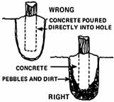
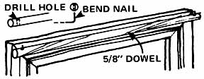
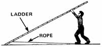

Here's another fine batch of tips and hints from down-to-earth folks all over MOTHER land. And here are answers to the questions I get asked most often:
Sorry, but in order to "spread the wealth" as far as possible, we must limit our subscription swap offer to one to a contributor. Feel tree to send along as many effective ideas as you like, however, since I naturally receive many duplicates (and your chances of submitting an unduplicated usable tip will be greater if you send in more than one).
And please do remember that we work several months ahead on MOTHER and that I have no way of knowing exactly when an accepted idea will pop up in this column. You'll be notified if and as soon as your hint is accepted . . . but that doesn't necessarily mean you'll see it in print immediately.
And please, please remember that I'm just a distant outpost editor for Country Lore and nothing more. If you want to change your address, inquire about an old subscription, or otherwise conduct business with MOTHER, write directly to THE Mother Earth News; P.O. Box 70, Hendersonville, North Carolina 28739.
And, oh yes: When you submit an idea to this department, do be sure to tell me-exactly?the name in which your subscription is entered (if you already have one). That way, if you're a winner, the folks in North Carolina will be able to locate and extend the old subscription with a minimum amount of hassle. Thanks!
Country nights are quiet (between the calls of the owl) unless you have one of those old slat?type beds that creaks every time a sleeper changes position. "But you can silence those complaining boards," says Connie Kerr?Laughlin, of Edinboro, Pennsylvania. "Remove the slats, wrap both ends of each one in newspapers, and replace the boards. Peace at last!"
Fenceposts will stay put a lot longer (especially in damp areas) if they're set in concrete . . . but there's a wrong and a right way to do the job. If you just pour the mix into a hole and then push the post down into it, you'll create a "vase" that holds water. And sooner or later, that water will cause the post to rot or rust off. Patricia Lynch?of Woodinville, Washington?has a better idea: "Dig the hole, throw in a few inches of pebbles or crushed stone for drainage, and 'plant' the post. THEN pour the concrete around the upright. Any water that seeps down between this post and its concrete will harmlessly drain away."
Mrs. Melvin Frederick of Durango, Iowa suggests putting a large handful of baking soda into the water you use for scalding fowl of any kind: "You'll find that it makes it easier to do a quick, clean job of defeathering the birds."
Bean, alfalfa, wheat, and other sprouts take over for many of us where garden vegetables leave off. And, since sprouting seeds need both warmth and darkness, it's only natural to cultivate them in the cupboard . . . where they're easily forgotten. "That°s why I just invert a paper bag over my jar of sprouts and leave 'em right out on the kitchen counter," says Evelyn Stewart of Milford, New Jersey. "The sack keeps the shoots as warm and as dark as they need to be . . . yet lets me grow 'em next to the sink so that I never forget to rinse the developing crop regularly."
If you make up your own chicken feed (see the formulas in MOTHER NO. 35) and need a source of protein, ask your butcher for the "meatsaw dust" that accumulates daily as he cuts steaks and roasts. Sister Anthony Ames of Erie, Pennsylvania reports that her biddies thrive on the fine scraps of bone and meat (which, of course, may be frozen whenever you collect a surplus that you want to feed to your flock later). And if your butcher won't give you the dust free, offer to trade a few eggs or some garden vegetables for it.
Oops! You've started to make a cake and you've just discovered that the egg tray is bare. But that won't stop you if you're Deldee Johnson, of Butte Meadows, California. Deldee keeps a jar of flaxseed in the kitchen and when she comes up short this way she just substitutes a tablespoon of the ground seed for one egg in a recipe. ( I don't see any reason why this wouldn't work, unless you were trying to make an egg-rich sponge or angel food cake!?Nancy.)
Short of freezer space? "Store cured, smoked hams and slabs of bacon in a cool, dry place in a wooden box filled with beardless barley," says William Hussman of Eagan, Minnesota. "My family's used this trick since Grandpa Lightfield homesteaded in Idaho. And, yes, you can use bearded barley the same way . . . if you remember to wear gloves to protect you from its barbs when you dig into the grain to retrieve your meat."
(EDITOR'S NOTE: Oats and wheat will work, too, Bill. At least Indiana farm families have been stashing wrapped, cured hams out in the oats bin for generations. And watermelons too! You just ain't lived until you've buried a halfdozen choice, unblemished watermelons in the oats bin at the end of a good summer . . . and then dug the crisp, ripe, juicy fruit back out of the granary for the annual Thanksgiving reunion feast!)
For an inexpensive, attractive way to let light into a log cabin, cap or cork (to keep the grout out of the containers) either clear or colored bottles and cement them right into spaces cut into the wall. Wipe the exposed surfaces of the glass clean before the cement dries on them?says Ken Raspotnick of Washburn, Wisconsin?and then stand back and admire the sun that shines in.
Lee Lewin?who homesteads through seven months of winter every year away up (10,000-foot elevation) in Placerville, Colorado?has some tips for improving cold weather egg production: [1] Pour boiling water over your layers' feed every day, to make it into a hot mash. [2] Give the birds hot water to drink twice a day. [3] Let the chickenhouse bedding build up all winter, so that the flock can take maximum advantage of the heat generated by the decomposing manure.
"You can buy several 5/8" wooden dowels for the price of just one conventional metal curtain rod," says Fort Kent, Maine's Gale Flagg, "and, if you know how, they'll support curtains just as well.
"To hang a set of window curtains, [1] drive a finishing nail into each side of the sash's frame. Then [2] cut a dowel to length, [3] hold it up to the nails, [4] mark the spots where they hit the wooden rod, and [5] drill slightly oversized holes through the dowel at these two points. Finally, [6] bend the head of each nail up to form an "L", [7] slide the wooden rod into the curtain casing, and [8] settle the dowel down onto the nails.
"You can curtain shelves the same easy, inexpensive way. Drive supporting finishing nails spaced two feet or so apart into the edge of each board and continue as above. If you prefer to hang one long panel of fabric on each shelf-instead of several short ones between the nails-make a small hand-finished 'buttonhole' in the cloth to admit each supporting hook."
Got a calf with the scours? Try this remedy sent in by Michael Gray of Dillsburg, Pennsylvania: Mix one whole egg and one teaspoon of grated nutmeg together (fork the spice into the egg gently, as though you were making a custard, without beating in a lot of air). Give the ailing calf a dose of this "nog" as soon as you notice its intestinal problem, and repeat the treatment in 12 hours if the symptoms persist.
And here's how Barbara Saltenreich (Essex Junction, Vermont) treats a colicky horse: "Hold the animal's head up and pour about a quart of mineral oil into the side of its mouth while you stroke its throat gently. Then walk the horse slowly for an hour or so or until it quits lying down each time you stop. And never let it roll!"
"You can make the job easier on yourself," writes Mrs. Robert Hill of Atlanta, Texas, "the next time you're driving cattle or hogs, if you twirl a strip of rubber or a short rope above your head. The animals naturally tend to move away from the whirring noise."
Ever try to set up a big extension ladder all by yourself? It ain't easy, is it? Unless you know the trick of tying a stout rope to the bottom rung of the ungainly beast and then stretching the length of cord out on the ground under the ladder. Which makes it easy for you to step on the rope and then "walk the line" as you gradually push the "slipless" ladder upright. Think of Gary and Gayle Hajek of Snohomish, Washington when you try this one!
Got a nice china dish that's cracked? Before you settle for a plastic replacement, take a tip from Mr. and Mrs. Eugene Olm of Stratford, Wisconsin: Boil the damaged plate or bowl in sweet milk for 45 minutes, and it'll probably seal the crack. Honest! And that's just one more good reason for keeping a milk cow or goat on the ole homestead.
And do you need a strainer for your goat or cow milk? There's no reason to buy one if you own a blender with a jar that comes apart. Just unscrew the ring that holds the bottom on the jar, remove the blender blades, stretch your filter paper or cheesecloth across the container's open bottom, and screw the ring on again. Presto! A strainer that works just fine for the one?cow or one?goat family. Joy Birnseth of Gold Hill, Oregon who sent us this hint?now has a request for the rest of us: How do you keep flies out of the house? So let's hear it for fly prevention. What have you tried that really works?
OK. Now it's YOUR turn! We've all come up with practical, down-home, time?tested solutions to the frustrating little problems that bug us every day. Let's hear YOUR best "horse sense" idea.
Send your country lore to Nancy Bubel, RD 1, Wellsville, Pennsylvania 17365. I'll make sure that the most useful suggestions I receive will appear in upcoming editions of this feature. And the home office editors of THE Mother Earth NewsY (the ones who work down in the mountains of North Carolina) tell me that a one?year subscription?or extension of an existing subscription?will be sent to each contributor whose idea or tip is printed in this column.?Nancy.
|
 |
|
 |
|
 |
|
|